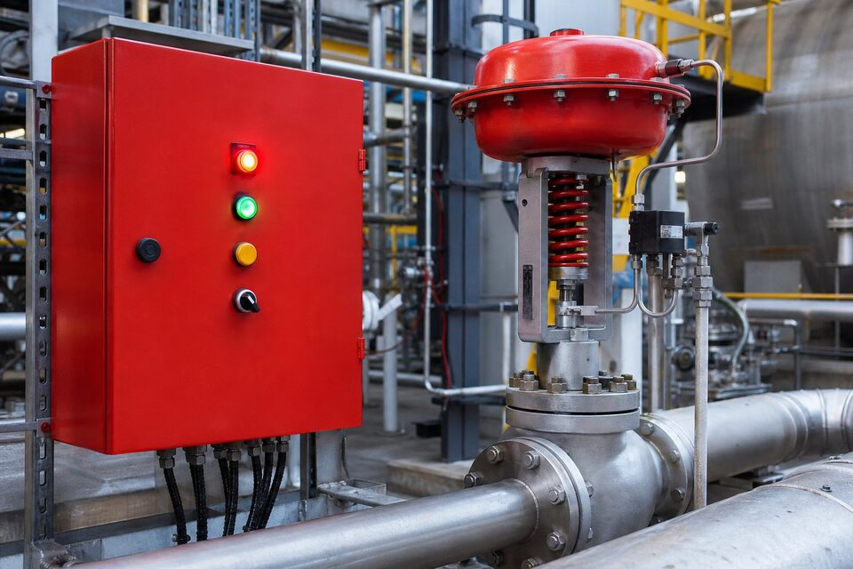

فلسفه: لایههای حفاظت
در صنایع فرایندی، ایمنی بر اساس مفهوم لایههای حفاظت مستقل ساخته میشود. اولین لایه، طراحی ذاتا ایمن فرایند است؛ سپس سیستم کنترل فرایندی قرار دارد که واحد را در محدوده عادی نگه میدارد؛ بعد هشدارها و مداخله اپراتور؛ و در نهایت لایههای خودکار ایمنی مانند سیستم قطع اضطراری که وقتی همه لایههای قبلی شکست خوردند وارد عمل میشوند. سیستم (ESD) با پایش شرایطی مانند فشار، دما و سطح در نقاط حساس، در صورت عبور از حدود ایمن، سناریوی متناسب را اجرا میکند: بستن شیرهای قطع، توقف پمپها و در صورت نیاز تخلیه به مشعل. نکته کلیدی فلسفه، استقلال این سیستم از کنترل عادی است؛ سیستم (ESD) سختافزار، منطق و تغذیه جداگانه دارد تا خرابی در کنترل، ایمنی را از کار نیندازد.

سطوح و سناریوهای قطع
طراحی (ESD) معمولا با سطوح مختلف قطع تعریف میشود. سطح تجهیز، یک پمپ یا کمپرسور خاص را متوقف میکند؛ سطح واحد فرایندی، یک واحد کامل را به وضعیت ایمن میرساند؛ سطح سایت، کل مجموعه را قطع و در صورت نیاز تخلیه اضطراری را فعال میکند. هر سناریو در ماتریس علل و نتایج مستند میشود: چه محرکهایی (مانند فشار بالا یا شعله) چه عملگرهایی (مانند کدام شیرها و موتورها) را فعال میکنند. این ماتریس، سند زنده طراحی است و هر تغییری در فرایند باید بازنگری آن را به همراه داشته باشد. در بهرهبرداری نیز آزمونهای دورهای بر اساس همین سناریوها انجام میشود تا صحت عملکرد کل زنجیره از سنسور تا عملگر تایید گردد.
اجزای سیستم
- سنسورهای ایمنی: فشار، دما، سطح و فلو با پیکربندی رایج برای کاهش خطای مشترک.
- منطقپرداز ایمنی: پردازنده اختصاصی با گواهی سطح ایمنی، مستقل از کنترل فرایندی.
- عملگرها: شیرهای قطع اضطراری با عملگر پنوماتیک یا هیدرولیک و فنر برگشت.
- ایستگاههای قطع دستی: شستیهای قرمز در نقاط استراتژیک برای قطع توسط اپراتور.
- تغذیه و ارتباطات: برق اضطراری مستقل و لینکهای ارتباطی فقط برای پایش، نه وابستگی.
در انتخاب اجزا، مفهوم سطح ایمنی یا (SIL) تعیینکننده است: هر تابع ایمنی بر اساس تحلیل ریسک، سطح مشخصی از کاهش ریسک را نیاز دارد و اجزای زنجیره باید بتوانند آن سطح را تامین کنند. برای تابعهای با سطح بالاتر، معمولا از پیکربندیهای رایج با رایگیری استفاده میشود تا هم خطای تصادفی و هم خطای سیستماتیک مدیریت شود. شیرهای قطع اضطراری نیز خود تجهیزات حیاتیاند: باید در زمان مشخصی بسته شوند، در وضعیت بیبرقی به حالت ایمن بروند و به صورت دورهای آزمون شوند؛ بسیاری از آنها به تجهیزات آزمون جزئی برای پایش بدون توقف مجهز میشوند.
الزامات استانداردها و چرخه عمر ایمنی
استانداردهای (IEC 61508) و (IEC 61511) چارچوب جامع مدیریت سیستمهای ایمنی را ارائه میدهند: از تحلیل ریسک و تعیین سطح ایمنی هر تابع، تا طراحی، نصب، بهرهبرداری و در نهایت از رده خارج کردن. یکی از مفاهیم محوری، چرخه عمر ایمنی است؛ یعنی ایمنی یک محصول نیست که یکبار خریداری شود، بلکه فرایندی مستمر از ارزیابی، آزمون و نگهداری است. در این چارچوب، فواصل آزمون دورهای، نرخ خرابی اجزا و احتمال شکست تابع ایمنی محاسبه و پایش میشوند. برای خریدار و بهرهبردار، معنای عملی این است که سیستم (ESD) باید با مدارک کامل شامل تحلیل ریسک، ماتریس علل و نتایج و برنامه آزمون تحویل و نگهداری شود؛ سیستمی که این مدارک را ندارد، عملا قابل ممیزی و دفاع نیست.
بهرهبرداری و آزمون دورهای
عملکرد مطمئن (ESD) در گرو آزمونهای منظم است: آزمون کامل زنجیره معمولا در توقفهای برنامهریزیشده انجام میشود و برای تجهیزاتی که امکان آزمون کامل بدون توقف نیست، روشهای آزمون جزئی و پایش آنلاین استفاده میگردد. نتایج آزمونها باید ثبت و روند آنها پایش شود؛ افزایش زمان بسته شدن شیر یا خطاهای مکرر سنسور، نشانههایی برای مداخله پیشگیرانهاند. تغییرات در سیستم نیز باید مدیریت شوند: هر تغییری در منطق یا تجهیزات، نیازمند بازنگری تحلیل ریسک و آزمون پس از تغییر است. در عمل، بسیاری از شکستهای سیستم ایمنی نه به دلیل طراحی، بلکه به دلیل تغییرات تدریجی مدیریتنشده در طول زمان رخ میدهند.
نکات خرید و یکپارچهسازی
در خرید سیستم (ESD)، مشخصات باید شامل سطوح ایمنی موردنیاز هر تابع، پیکربندیهای رایج، الزامات محیطی و تاییدیههای موردنیاز باشد. سازنده سیستم باید گواهیهای سطح ایمنی سختافزار و سوابق پروژههای مشابه را ارائه دهد و خدمات مهندسی شامل برنامهریزی منطق و آزمون نیز در قرارداد دیده شود. یکپارچهسازی با سیستم کنترل فرایندی باید فقط در سطح پایش و نه وابستگی عملیاتی انجام شود. همچنین برنامه آموزش اپراتورها برای سناریوهای قطع و واکنش به آنها، بخشی ضروری از تحویل است؛ سیستمی که اپراتور آن را نشناسد، در لحظه واقعی با تردید و تاخیر مواجه میشود.
جمعبندی
سیستم (ESD) آخرین لایه دفاع خودکار در صنایع فرایندی است و طراحی، بهرهبرداری و نگهداری آن باید بر اساس استانداردهای چرخه عمر ایمنی انجام شود. با تحلیل ریسک درست، انتخاب اجزای متناسب سطح ایمنی و آزمونهای منظم، این سیستم در لحظهای که همه چیز شکست خورده، واحد را به سلامت متوقف میکند.
سوالات رایج
سیستم (ESD) چیست؟
سیستم ایمنی مستقلی که در شرایط خطرناک فرایندی، واحد یا بخشهایی از آن را به صورت خودکار به وضعیت ایمن میرساند؛ معمولا با قطع جریانها، توقف تجهیزات و ایزولهسازی.
چرا سیستم (ESD) از سیستم کنترل جداست؟
برای اینکه خرابی یا دستکاری در سیستم کنترل فرایندی نتواند مانع عملکرد ایمنی شود؛ استقلال سختافزاری و منطقی، پایه فلسفه لایههای حفاظت است.
سطوح قطع اضطراری چگونه تعریف میشوند؟
معمولا در سطوح مختلف از توقف یک تجهیز تا قطع کل واحد و تخلیه اضطراری؛ هر سناریو در ماتریس علل و نتایج طراحی با محرکها و عملگرهای مشخص تعریف میشود.
استاندارد حاکم بر این سیستمها چیست؟
خانواده (IEC 61508) و (IEC 61511) که چرخه عمر ایمنی، تعیین سطح ایمنی و الزامات طراحی، نصب و بهرهبرداری سیستمهای ایمنی ابزار را پوشش میدهند.
مطالب مرتبط
طراحی و تامین تجهیزات سیستمهای قطع اضطراری مطابق چرخه عمر ایمنی (IEC 61511).
مشاهده صفحه محصول ← ثبت RFQ همین محصولتامین این تجهیزات را به پیشرو تجهیز فرتاک بسپارید
شرکت پیشرو تجهیز فرتاک تامینکننده تخصصی تجهیزات صنعتی برای پروژههای نفت، گاز، پتروشیمی، فولاد و نیروگاهی است. برای دریافت پیشنهاد فنی و قیمت، استعلام (RFQ) خود را ثبت کنید تا کارشناسان مهندسی فروش در کوتاهترین زمان پاسخ دهند.
- تامین ابزار دقیقتجهیزات ایمنی و کنترل
- تامین تجهیزات صنایع نفت و گازپکیج مواد مطابق وندورلیست